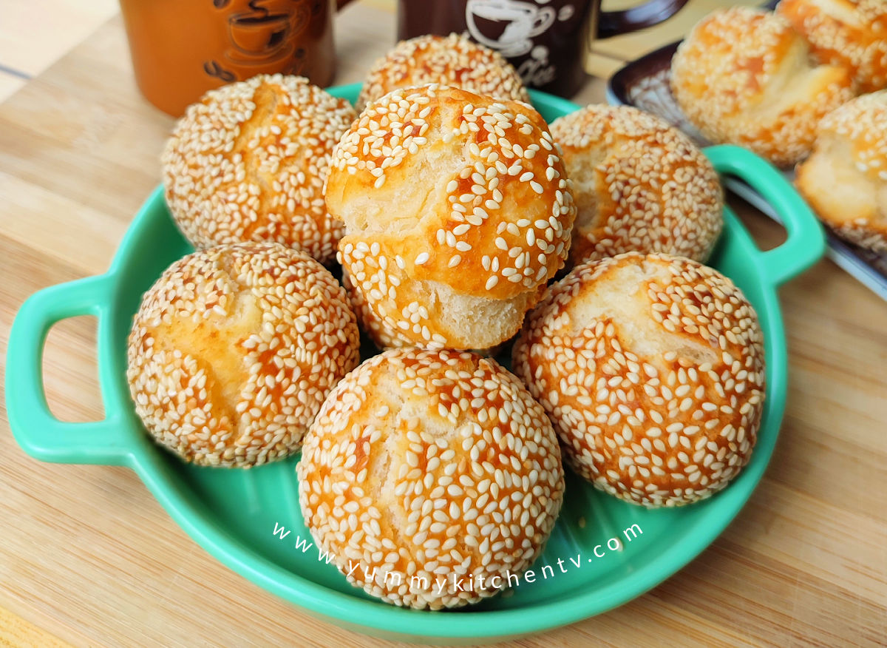

Binangkal

Binangkal is a recipe that is native to Visayas and Mindanao. Unlike most donuts,
binangkal is mostly chewy paired with sesame seeds and crispy crust which is a perfect snack for kids.
Ingredients
- 2 cups all-purpose flour
- 1/4 cup cornstarch
- 3/4 cup white sugar
- 1/4 teaspoon salt
- 1 teaspoon baking powder
- 2 tablespoons salted butter melted
- 1 large egg
- 1/2 cup evaporated milk
- 1/2 cup sesame seeds
- 1/4 teaspoon vanilla optional
Steps
- Combine all dry ingredients in a bowl: flour, cornstarch, sugar, salt, and baking powder. Mix well
- In a separate bowl mix together milk,melted butter, and egg. Mix well.
- Slowly add the dry ingredients into the wet mixture. Mix well to form a dough.
- Scoop a tablespoon mixture to form a ball and roll it into the sesame seeds.
- Prepare oil in a pan for deep frying. Make sure the oil is hot before putting the dough.
- Deep fry unntil golden brown.